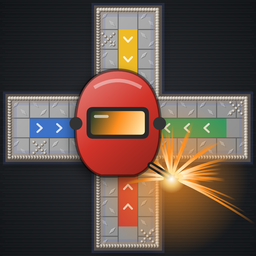

PARJAMIE
The race home, for two
What it is
Parjamie is a classic cross-and-circle race game set in a welding shop. Roll the dice, bring your welding helmets out of their bay, run them once around the diamond-plate board, and get them all home before the other player does. Capture, block, shelter on the purple safe squares, and earn a Certified Welder plate for the win.
Play on two nearby phones, pass one phone back and forth, or take on Sparky and Torch, the computer welders. It works on iPhone, iPad and Mac, with no accounts, ads or tracking.
How to play
- Goal: be the first to get every helmet from your bay, around the board, and into the middle.
- Getting out: you need a 5, either one die or both dice added together (house rules can change this).
- Moving: tap a number, then a glowing helmet. Helmets travel clockwise and turn up their own colored home row.
- Capturing: land exactly on the other player's helmet to send it back. Helmets on purple safe squares can't be captured.
- Blockades: two helmets on one square block everyone.
The full rules, with a key to every square, are under How to play in the app. Turn on Hints for step-by-step help on each turn.
Common questions
The two devices can't find each other. Both need to be on the same Wi-Fi network with Parjamie open. On iPhone and iPad, check Settings › Privacy & Security › Local Network and make sure Parjamie is allowed. One player taps Host a game, the other taps Join a game.
It says the other device is on a different version. Update Parjamie on both devices so they match.
The game froze or disconnected when a phone went to sleep. Unlock it and open Parjamie again. The game reconnects on its own and picks up where you left off.
How do I change the rules? Tap House rules on the start screen. Whoever hosts picks the rules for both players.
Get help
Found a problem or have a question? Open a support request and describe what happened, including your device and what you were doing. You will need a free GitHub account.